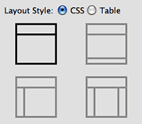
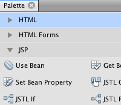
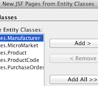
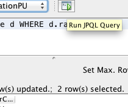
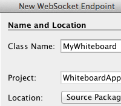

Поддержка Java Enterprise Edition

Для перехода к полноэкранному предварительному просмотру щелкните изображение
IDE NetBeans обеспечивает непревзойденную поддержку для разработки веб-приложений и приложений на стороне сервера, использующих платформу Java EE. Поддержка IDE была разработана в тесном сотрудничестве с рабочими группами Java EE и GlassFish, что позволило обеспечить тесную интеграцию и максимальную простоту использования спецификации Java EE. Поэтому при отсутствии опыта работы со спецификацией и структурой Java EE использование IDE NetBeans является оптимальным способом быстрого изучения и получения эффективных результатов при программировании на Java EE.
Поддержка Java Enterprise Edition 7
IDE NetBeans обеспечивает полную поддержку новейших стандартов Java EE 7, включая JSF 2.2 (Facelets), Java Persistence 2.1 и Contexts and Dependency Injection 1.1, веб-службы на базе JAX-RS и JAX-WS, а также предыдущие версии платформ Java EE 6 и Java EE 5.
Поддержка в диапазонах IDE с помощью мастеров, которые могут использоваться для быстрого создания приложений, поддержка с помощью редакторов при создании артефактов Java EE и их потреблении, настройка и создание приложений, поддержка при развертывании, выполнении и тестировании. Благодаря этим возможностям вы сможете сконцентрироваться на реализации коммерческих и логических аспектов вашего приложения.
Учебная карта по Java EE и Java Web

Упрощенная разработка EJB
IDE поддерживает новейший стандарт EJB 3.2, в том числе в проектах веб-приложений. Мастер создания файлов проектов EJB предоставляет возможности для создания компонентов сеансов, в том числе одиночных компонентов сеансов, компонентов под управлением сообщений для обработки асинхронных сообщений, а также компонентов сеансов с таймерами для работы с временными уведомлениями. Можно использовать мастер для быстрого создания сеансного компонента для класса сущностей, включая соответствующие аннотации и часто используемые методы по умолчанию. Компоненты могут быть отображены в представлении с локальным интерфейсом или без интерфейса. Предусмотрена также поддержка для вызова компонентов EJB с использованием мастеров вставки кода в редакторе
Создание корпоративных приложений с EJB 3.1

Разработка JSF
IDE NetBeans поддерживает новейший стандарт JavaServer Faces (JSF) 2.2, а также предыдущий стандарт 2.1 и более ранние версии. IDE NetBeans поддерживает Facelets, официальную технологию представлений для JSF 2.2. Можно создать новый проект веб-приложения на основе платформы Facelets для работы со стандартными компонентами примеров реализации JSF.
IDE также поддерживает различные компоненты библиотек JSF(PrimeFaces, RichFaces, ICEfaces), которые могут упростить разработку страниц фейслетов. Предоставляются мастеры и шаблоны кода для создания приложений PrimeFaces, которые содержат код взаимодействия с базой данных.
Введение в JavaServer Faces
Поддержка JPA
IDE предоставляет средства для работы с Java Persistence API 2.1. С помощью мастеров можно создать классы сущностей из базы данных, а также приложение CRUD из классов сущностей. Среда IDE поддерживает все типы взаимосвязей сущностей (один к одному, один ко многим, многие к одному и многие ко многим), а также все типы первичных ключей (в один столбец, составной и сгенерированный). В среде IDE также предусмотрены шаблоны и графические редакторы для создания и управления блоками сохранения состояния.
IDE теперь имеет автономный редактор JPQL, где можно запустить запрос JPQL непосредственно из IDE.
Поддержка шаблонов JSF |
Разработка JSP |
Поддержка веб-профилей |
|
 |
 |
|
Создание клиентов на основе мастеров |
Поддержка CDI |
Редактор JPQL |
|
 |
|
 |
Поддержка WebSocket |
||
|
 |


{kind=link}
{kind=link}
См. также
- На странице сведений о версии IDE netbeans 8.1 приведен список выделенных функций в последней стабильной версии.
- Учебная карта по Java EE и Java Web для учебных курсов по началу работы.